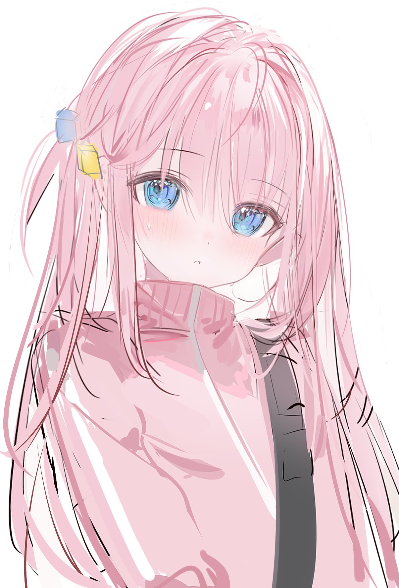

Este es un ejemplo de pagina en github para el proyecto para portafolio.
 Bocchi The Rock es una serie de anime Japones referente a una banda de rock, la protagonista es Hitori Goto (Bocchi) una chi k con problemas de ansiedad social que le gustaría ser notada por su música, increíblemente muchos nos identificamos con ella , literalmente me salvo la vida, no es necesario dejar este mundo para sentir que se esta muerto en vida, agradezco y tengo esperanza en estos tiempos gracias a esta serie, gracias Japón yo sé que los Gaijin no seremos parte nunca de ustedes sin embargo agradezco a todo lo bueno que existen ojalá su cultura jamás cambie si no es para bien
Siempre me gustaron las canciones donde la guitarra acompaña a la voz el tema "that band" me recordo a un grupo mexicano llamado Caifanes que tiene una canción de nombre "Aqui no es asi" que nos presenta arreglos de guitarra acompañando la voz por eso de inmediato me gusto esta canción de "kessoku band" que es la banda de bocchi este es el tema original
En este cover podemos notar aun mas la guitarra y como acompaña a la voz , a mi me encanta esa combinación de sonidos, son un deleite auditivo que aparentemente muchos podemos apreciar incluso inconscientemente